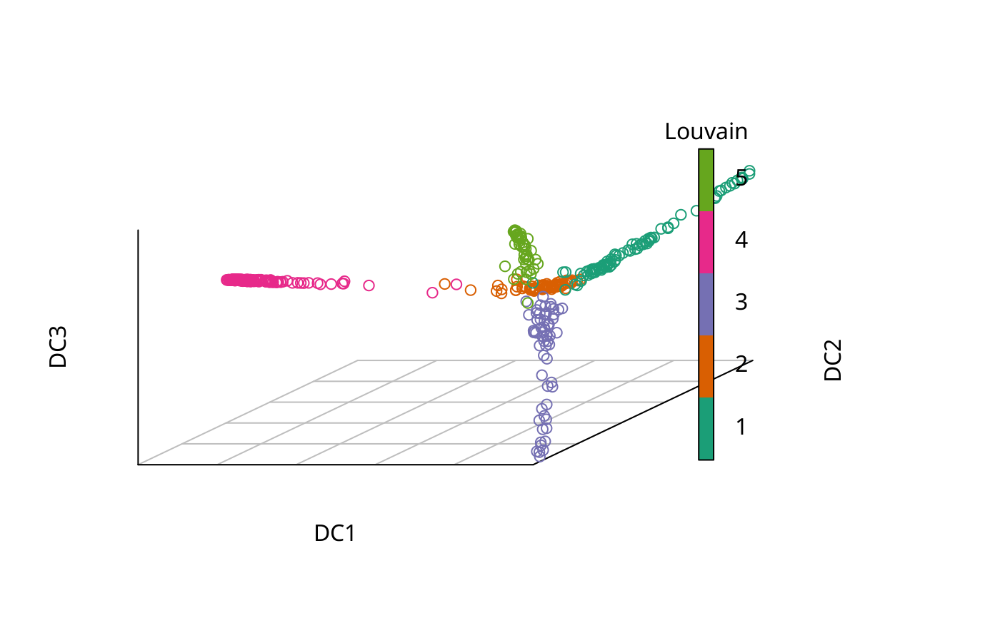

If you want to plot the eigenvalues, simply plot(eigenvalues(dm)[start:end], ...)
plot.DiffusionMap( x, dims = 1:3, new_dcs = if (!is.null(new_data)) dm_predict(x, new_data), new_data = NULL, col = NULL, col_by = NULL, col_limits = NULL, col_new = "red", pal = NULL, pal_new = NULL, ..., ticks = FALSE, axes = TRUE, box = FALSE, legend_main = col_by, legend_opts = list(), interactive = FALSE, draw_legend = !is.null(col_by) || (length(col) > 1 && !is.character(col)), consec_col = TRUE, col_na = "grey", plot_more = function(p, ..., rescale = NULL) p ) # S4 method for DiffusionMap,numeric plot(x, y, ...) # S4 method for DiffusionMap,missing plot(x, y, ...)
| x | |
|---|---|
| dims, y | Diffusion components (eigenvectors) to plot (default: first three components; 1:3) |
| new_dcs | An optional matrix also containing the rows specified with |
| new_data | A data set in the same format as |
| col | Single color string or vector of discrete or categoric values to be mapped to colors.
E.g. a column of the data matrix used for creation of the diffusion map. (default: |
| col_by | Specify a |
| col_limits | If |
| col_new | If |
| pal | Palette used to map the |
| pal_new | Palette used to map the |
| ... | Parameters passed to plot, scatterplot3d, or plot3d (if |
| ticks | logical. If TRUE, show axis ticks (default: FALSE) |
| axes | logical. If TRUE, draw plot axes (default: Only if |
| box | logical. If TRUE, draw plot frame (default: TRUE or the same as |
| legend_main | Title of legend. (default: nothing unless |
| legend_opts | Other colorlegend options (default: empty list) |
| interactive | Use plot3d to plot instead of scatterplot3d? |
| draw_legend | logical. If TRUE, draw color legend (default: TRUE if |
| consec_col | If |
| col_na | Color for |
| plot_more | Function that will be called while the plot margins are temporarily changed
(its |
The return value of the underlying call is returned, i.e. a scatterplot3d or rgl object.
If you specify negative numbers as diffusion components (e.g. plot(dm, c(-1,2))), then the corresponding components will be flipped.
